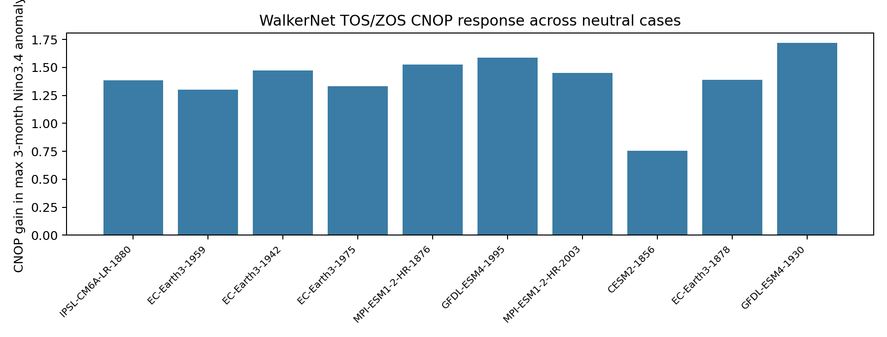
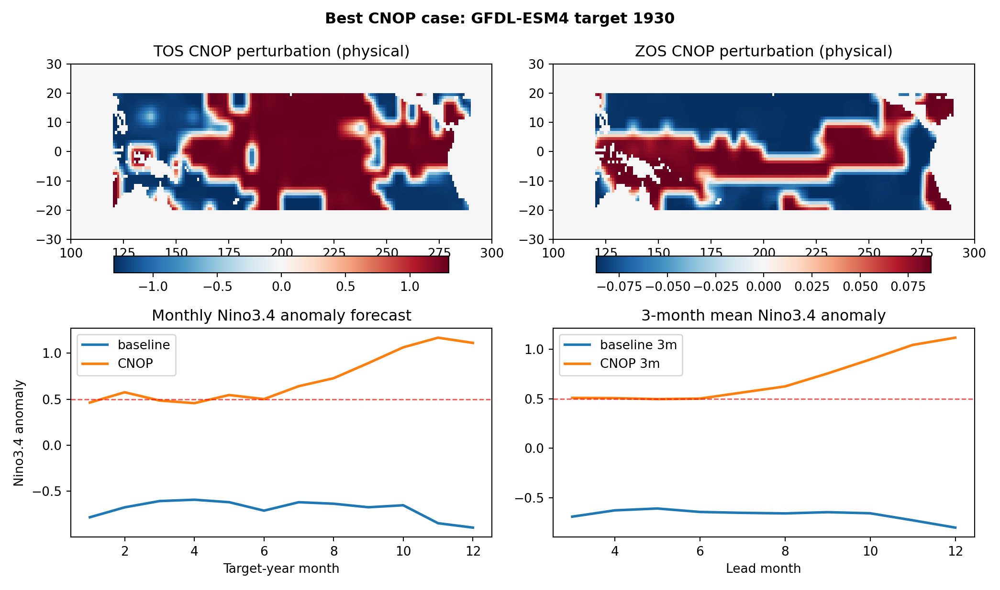

在训练好的 WalkerNet 上，用 PyTorch 自动微分求解 TOS/ZOS CNOP-like 初始扰动。 扰动只作用于输入窗口最后一个月，并在 12 个月 rollout 后最大化目标年三个月平均 Niño3.4 anomaly。
best_skill.pt，checkpoint epoch 6。tos 和 zos。| Source | Year | Observed neutral | Baseline | CNOP | Gain |
|---|---|---|---|---|---|
| IPSL-CM6A-LR | 1880 | 0.126 | -0.031 | 1.355 | 1.386 |
| EC-Earth3 | 1959 | 0.158 | -0.225 | 1.075 | 1.301 |
| EC-Earth3 | 1942 | 0.183 | 0.286 | 1.760 | 1.474 |
| EC-Earth3 | 1975 | 0.195 | -0.086 | 1.247 | 1.334 |
| MPI-ESM1-2-HR | 1876 | 0.221 | -0.432 | 1.092 | 1.525 |
| GFDL-ESM4 | 1995 | 0.229 | 0.100 | 1.688 | 1.588 |
| MPI-ESM1-2-HR | 2003 | 0.232 | 0.430 | 1.879 | 1.449 |
| CESM2 | 1856 | 0.234 | 0.108 | 0.863 | 0.755 |
| EC-Earth3 | 1878 | 0.241 | 0.326 | 1.715 | 1.389 |
| GFDL-ESM4 | 1930 | 0.252 | -0.606 | 1.114 | 1.721 |

